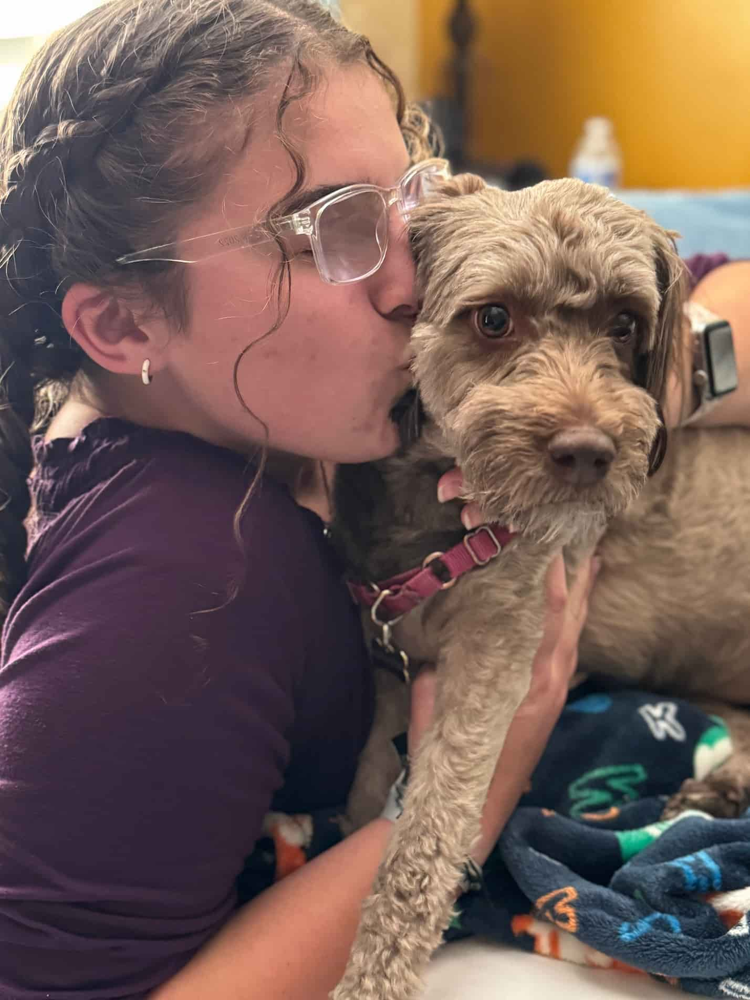

Cassie Carone | WDD 130
Hi, I'm Cassie! There's not much to say about me besides the fact that I LOVE life! This world is absolutely marvelous, and I'm so grateful for the chance to be in it! I've been looking forward to this class and am so ready to begin my educational journey! I'm a big fan of learning, and I've always found natural curiosity to be one of the most incredible feelings we can experience. The desire (and ability) to learn are gifts from God, and I have an immense amount of gratitude for them.
P.S. Meet my sweet puppy Dixie! She's a mini aussi-doodle and I absolutely adore her!
P.P.S. Here are some of my favorite temples! You should check them out!